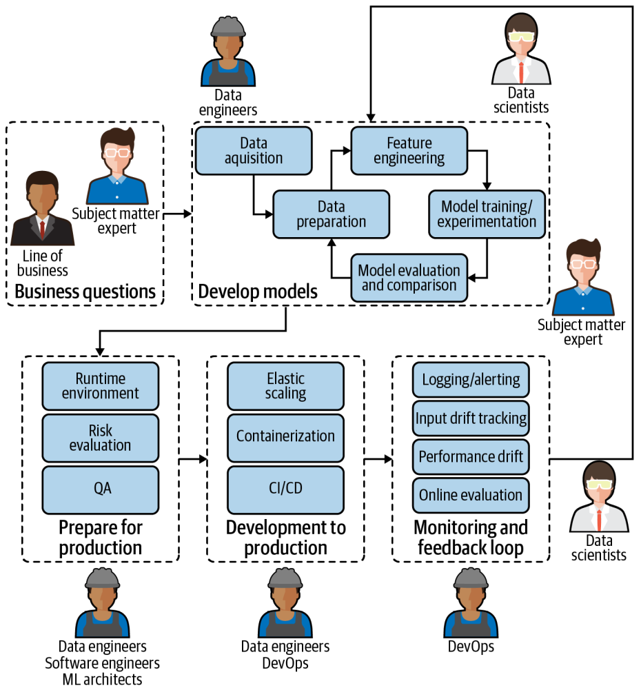

Introduction
What is MLOps?
MLOps refers to Machine Learning Operations, which is a core component of Machine Learning engineering. MLOps focuses on optimizing the process of deploying machine learning models into a production environment as well as sustaining and tracking those models once live.
The goal of MLOps is to automate and standardize machine learning workflows to improve efficiency, productivity, and model performance monitoring. To achieve that, it demands collaboration between data scientists, machine learning engineers, IT teams, etc.
in essence:
MLOps is all about...
Taking Machine Learning Models to production!
Lets rewrite that in a non technical way!
MLOps is all about...
Provide ways for ML to generate value to the business on an ongoing basis!
The Machine Learning Life Cycle
Question 1
Resposta
It is normal to think that ML projects only involve data processing and model training. But there are others relevant concerns to take in consideration!
Lets take a look at the ML Life Cycle!

The machine learning life cycle begins with planning. At this initial stage, objectives are defined to identify the specific problem or task that machine learning could help solve. This involves understanding the business or project goals and what type of insights or predictions are needed from deployed models. Careful planning at the start helps set clear expectations, avoiding wasting efforts on projects with inadequate data or unrealistic goals.
Is also import to do data collection and preprocessing. This involves gathering large amounts of data from various sources such as databases, websites, APIs, and sensor readings. The data needs to be properly formatted, cleaned of any anomalies or inconsistencies, and have missing values imputed. Features also need to be extracted or engineered from the raw data. This processed data is then used to build machine learning models.
Once the data is prepared, the next step is to divide it into training and test sets. The training set is used to develop machine learning models by exposing various algorithms to patterns in the labeled data. Popular algorithms such as decision trees, random forests, support vector machines, neural networks, etc. are applied to automatically learn from the training examples. Their parameters are tuned through iterative training to minimize error and optimize performance. The test set is used to evaluate how well the trained models generalize to new unseen data. The top performing models are selected for deployment.
After a model has been selected, it needs to be deployed as a machine learning application or service. It can be integrated into existing software systems and utilized to make predictions on live data streams in a production environment. Once in operation, its performance also needs to be continuously monitored for accuracy and drifts over time. The data collection and model development cycles may need to be revisited to keep improving the capabilities of the learning systems. This marks the completion of one iteration of the machine learning life cycle.
Take a look at a more realistic picture of ML life cycle inside an average organization today:

It involves many different people with completely different skill sets and who are often using entirely different tools.
In this course, we will focus less on model development, assuming that this is already covered in other Insper courses, and more on model deploying and monitoring.
References
- Image The Machine Learning Life Cycle: https://images.datacamp.com/image/upload/v1664812812/Machine_Learning_Lifecycle_2ffa5897a7.png
- Introducing MLOps. Chapter 1.
- Practical MLOps. Chapter 1.
- POE and ChatGPT.
{kind=link}